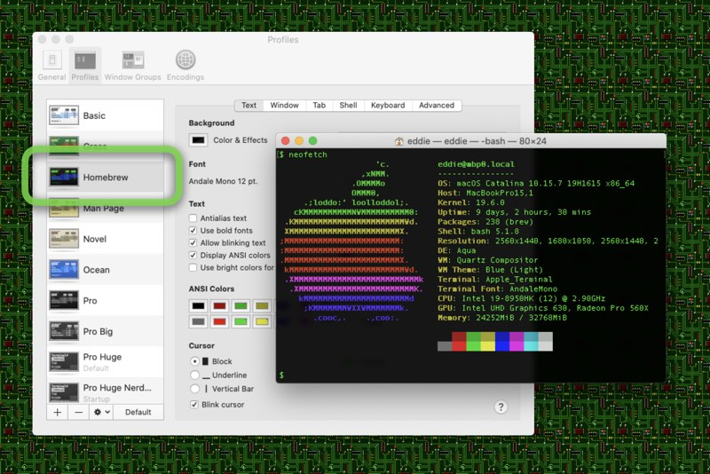

The Problem with Homebrew
I need to spill the tea on the Homebrew package manager, but first some praise. Homebrew is a really good name. It's cute! Its chock-full of Apple history: the Apple I computer was introduced at the Homebrew Computer Club.
The name evokes nostalgia, I'm getting a warm feeling just thinking about retro computers. The clickety-clack of the mechanical keys, the low-frequency grind of floppy drive, the smell of the electronics and the printed manuals. Even Terminal.app ships with a retro theme called Homebrew.
Homebrew also has a great out-of-the-box experience. Installation is a single command you paste into your shell. By default, there’s no configuration to fiddle with, no path to set, and no permissions to worry about. I believe this handful of of positives account for its popularity, however simple they might be.
With that said, this post presents some of the problems I’ve encountered using Homebrew. They're not the biggest problems or the most egregious, but I think they're the easiest to understand and the most relatable.
Cutesy names gone wild
The cutesy name by itself is fine. But when you over-extend the metaphor to actual home beer brewing (thanks, Jimmy Carter) and force beer nouns onto a package management system, things quickly go off the rails.
Thus, we have Casks, (poured) Bottles, Taps, Kegs, Formulae, Recipes, Cellar, Caskroom, and others. I have no idea what “key only” is supposed to mean. I kind of get "taps", but these terms are mostly baffling.
Stop it!
It’s package manager. It installs packages from source or as binaries. Packages are organized and indexed in a package repository. Use the nomenclature that we have all agreed on.
Package managers package packages
It might seem obvious, but a package managers purpose is to package and manage packages for you. The unforgivable sin of a package manager is to not package something you need or worse to print a cop-out when you request a package be installed.
When I evaluate a package manager I check for a few packages: it needs to have Emacs and its variants, CLI only, the NextSTEP (Emacs.app package) variant, X11 variant, etc; it needs to have XQuartz on a Mac and X11 on Linux, obviously; it should package TeX Live too.
Screw any of this up and you don’t have a package manager suitable for my use case. When Homebrew first came on the scene I recall at least TeX Live and XQuartz not being available. I seem to remember something wrong with Emacs too, maybe it didn't have the NS/app variant.1
The case of TeX Live
Historically Homebrew would not install TeX Live.
$ brew install tex-live
Installing TeX from source is weird and gross, requires a lot of
patches, and only builds 32-bit (and thus can't use Homebrew deps on
Snow Leopard.)
We recommend using a MacTeX distribution: http://www.tug.org/mactex/Homebrew no longer prints this cop-out. It may seem unfair to bring up Homebrew's historic behavior, but I think it highlights a flaw in the philosophy of Homebrew that persist to this day. Homebrew punts on anything that's tricky. Building software is weird and gross? As a package manager, that's literally your job!
Nowadays, instead of a cop-out, Homebrew directs you to use the Cask system. Homebrew hard-codes two packages for blanket refusal, the first is Xcode which is understandable (although disappointing), the second is TeX.
$ brew install tex-live
Warning: No available formula or cask with the name "tex-live".
==> Searching for similarly named formulae...
Error: No similarly named formulae found.
There are three versions of MacTeX.
Full installation:
brew install --cask mactex
Full installation without bundled applications:
brew install --cask mactex-no-gui
Minimal installation:
brew install --cask basictex
Casks, however, come with their own set of problems. A Cask, as far as
I can tell, is a Homebrew abstraction over the installer program and
the installation package format (.pkg & .mpkg). That means the
underlying implementation is closed source and the package are macOS
only. Consequently, even if the upstream software is cross-platform,
the Cask is not—not even on Linuxbrew.2 This also means the
packages are binary only and any compile-time options are
inaccessible.
What the deal with macFUSE?
At some point you may want to install a macFUSE filesystem like
bindfs.
$ brew install bindfs
Error: bindfs has been disabled because it requires
closed-source macFUSE!I don't care if it is closed-source. Homebrew has a lot of other closed-source software available, why is macFUSE different?
Other deliberately disabled package
There are about 120 additional disabled packages. Many of these are FUSE based file systems and others are for reasons like "unmaintained," "doesn’t compile," or "license issues." One is left wondering why a package manager should make decisions about licensing for you? Especially Homebrew, that facilitates installing closed-source binaries, it isn't like it's a GNU package manger with a strict ideology.
Anything marked "doesn't compile" makes me question if this is a case of something being truly broken or a case of "installing […] from source is weird and gross?" I suspect the latter.
Forced Upgrades
There’s nothing I hate more than software that tries to "help," but gets it wrong. That’s the opposite of helpful—that’s Clippy.
Homebrew will update itself and upgrade all your outdated packages if you make the unfortunate decision to perform the innocuous task of installing an unrelated package. It will do this even when installing a package that has no dependencies in common with your installed packages.
I know some people will claim that this is no big deal or even desirable in the age of continuous updates and moving targets. Maybe to understand the peril you need an update to break your system.
There is a legitimate argument for updating and upgrading when new packages are installed, but why not notify the user that continuing will update and upgrade other packages? Give the user a way to back out before performing sweeping changes that may break their setup.
Yes, there is an environment variable HOMEBREW_NO_AUTO_UPDATE. But
you'll only go looking for it after Homebrew has borked your system
once or twice.
Configuration via environment variables have risks too. If you set
HOMEBREW_NO_AUTO_UPDATE in your Bash .profile then switch to Zsh
without porting all of your .profile to .zshrc, the next time you
run brew you could be in a world of hurt. This is not just a
hypothetical, I just did it to myself:
I set my login shell to tcsh and a few days later tried to install
ShellCheck for the making sure my #!/bin/sh scripts are POSIX
compatible (it seemed especially prudent while running a non-Bourne
shell).
The HOMEBREW_NO_AUTO_UPDATE environment variable does not stop every
forced upgrade either, so with or without it set brew install is a
ticking time bomb.
Homebrew is a little slow
Homebrew is mostly Ruby. The brew command is implemented as a Bash
script that execs (or sources) additional Bash scripts and Ruby
scripts, but that's an implementation detail. There's a few Swift
files too. But since it is mostly Ruby it is slow. You can expect
about 1 second of wall clock overhead for any invocation of brew.
$ time brew help
...
real 0m1.869s
Repeat invocations of brew do speed up thanks to bootsnap, but not
by much.
$ time brew help
...
real 0m1.041sSearch is incredibly slow
$ time brew search git
...
real 0m13.542sAt the time of this writing Homebrew returns 147 packages for the search and it takes 13 and ½ seconds.3 For contrast, the same search with MacPorts:
$ time port search git
...
real 0m0.702sMacPorts returns 295 packages and takes around 1 second.4
Search in name only
What really irks me isn't that search is slow, it's the terse output and lack of long descriptions. It would be nice if search would, at least optionally, display additional information such as the version and short description.
There is a --desc option, but it changes the search semantics rather
that optionally displaying some additional information about the
packages returned by the query. It broadens the search to include
descriptions. This, however, is absurd for Homebrew because many
package have no description or the descriptions are so short they
don’t provide additional keywords to match against.
Many other package managers have categories and long descriptions of
packages that aid package discovery. Homebrew's vim description is "Vi
'workalike' with many additional features." If somebody wanted to see
every text editor in Homebrew the search brew search --desc editor
will not return vim. In fact, this search skips many available text
editors because nobody thought to include "text" or "editor" in the
descriptions. Contrast Homebrew’s vim description with the description
in FreeBSD Ports:
Vim is a highly configurable text editor built to enable efficient text editing.
It is an improved version of the vi editor distributed with most UNIX systems.
Vim is often called a "programmer's editor," and so useful for programming that
many consider it an entire IDE. It's not just for programmers, though. Vim is
perfect for all kinds of text editing, from composing email to editing
configuration files.
FreeBSD has the following Vim packages:
* vim: Console-only Vim (vim binary) with all runtime files
* vim-gtk3, -gtk2, -athena, -motif, -x11: Console Vim plus a GUI (gvim binary)
* vim-tiny: Vim binary only, with no runtime files. Not useful for most people;
intended for minimal (ex. jail) installations
WWW: http://www.vim.org/
WWW: https://github.com/vim/vimThe FreeBSD Ports' description contains a good set of keywords to match against: text, editor, editing, vi, programmer, programming, IDE, composing, email, files.
Poor package info
One consequence of the bad search interface is that I always find
myself having to use brew info to ensure I’m installing the correct
package and because there’s no long description, I almost always find
myself using brew home as well. The repeat brew search, brew
info, brew home cycles are painful and clunky. The pain is
compounded by Homebrew's slowness.
Homebrew’s info command format is crowded, hard to read, and contains a lot of extraneous information. Keeping with our vim theme, here is vim’s info as presented by Homebrew:
$ brew info vim
vim: stable 8.2.3400 (bottled), HEAD
Vi 'workalike' with many additional features
https://www.vim.org/
Conflicts with:
ex-vi (because vim and ex-vi both install bin/ex and bin/view)
macvim (because vim and macvim both install vi* binaries)
Not installed
From: https://github.com/Homebrew/homebrew-core/blob/HEAD/Formula/vim.rb
License: Vim
==> Dependencies
Required: gettext ✔, lua ✘, ncurses ✔, perl ✔, python@3.9 ✔, ruby ✘
==> Options
--HEAD
Install HEAD version
==> Analytics
install: 64,670 (30 days), 176,361 (90 days), 958,195 (365 days)
install-on-request: 64,634 (30 days), 176,252 (90 days), 955,894 (365 days)
build-error: 24 (30 days)Now contrast Homebrew’s info formatting with MacPort's:
% port info vim
vim @8.2.2683 (editors)
Variants: athena, big, cscope, gtk2, gtk3, [+]huge, lua, motif,
perl, python27, python36, python37, python38, python39,
ruby, ruby18, ruby19, ruby20, ruby21, ruby22, ruby23,
ruby24, ruby25, small, tcl, tiny, x11, xim
Description: Vim is an advanced text editor that seeks to provide the
power of the de-facto Unix editor 'Vi', with a more
complete feature set.
Homepage: https://www.vim.org/
Library Dependencies: ncurses, gettext, libiconv
Platforms: darwin, freebsd
License: Vim and GPL-2+
Maintainers: Email: raimue [at] macports.org, GitHub: raimueIt’s incredible how a little formatting and white space beats color and dingbats.
Conclusion
Homebrew has some good qualities, but they can be easily replicated by existing package manager or new package managers. Creating a package manager with a good cutesy name. Now that's the hard part. Trust me, Windows has a package manger called Chocolatey ü§¢.
There's no good reason to stretch a metaphor so thin as to give components of your package manager confusing names. Additionally a package manager should be good at building software and should have a plentiful package repository. Homebrew fails all of these.
Don't automatically perform actions that can take a long time or that can break stuff. Especially don't update and upgrade packages unless at user's request or with the user's consent.
Slow isn't the worst thing for a package manager, but if you have to be slow—at least make sure you make up for it in some way.
Now for the kicker, I'm still using Homebrew, at least for now. I've tried so many package managers over the years and there's no one-true-package-manager. They all do things that are baffling and all do things that are genius. My ideal package manager would take the best of APT, MacPorts, pkgsrc, Nix, and yes, even Homebrew.
Is it possible? I don't know, but I started building a package manager by accident. I was attempting to improve the build system for XQuartz when I realized I had essentially built a mini-package manager with package recipes, dependency graphs, incremental builds, patch phase, and so on. It is called pkgmgr and it is a work in progress.
Footnotes
Last modified: 2021-11-02 00:00:00 +0000 UTC